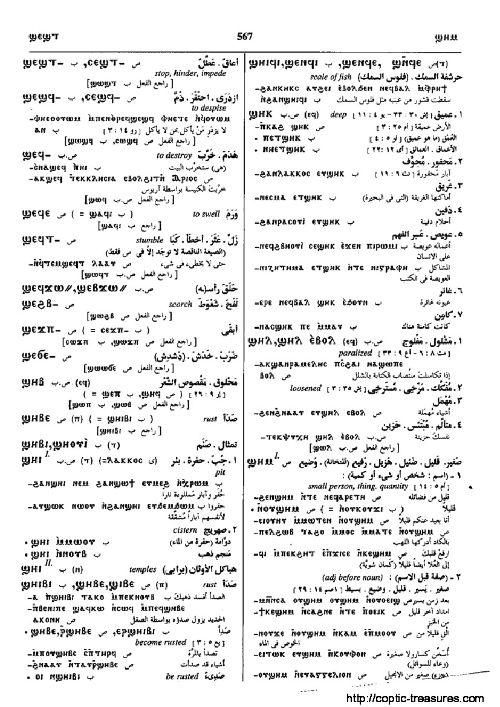

ϣⲏⲓⲃⲓ
(
ⲡ
)
(
noun male
)
Crum:
551a
rust, verdigris [
ιοσ
]
1863-1-1
1863-2-1
(S)
ϣⲏⲃⲉ
(S, A)
ϣⲓⲃⲉ
(B)
ϣⲏⲓⲃⲓ
(F)
ϣⲓⲃⲓ
ⲣ
ϣ
.
become, be rusted [ιουσθαι]
Crum:
551a
(S, B)
ϣⲃⲉ
(noun)
(S)
ϣϥⲉ
,
ϣⲉⲃⲉ
(noun)
(noun)
off-scouring, filth
551
Dawoud:
567a-567b

567
Home
prev
Key:
1863
next
Contact